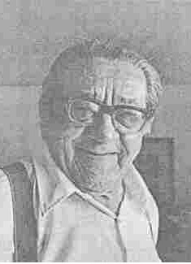

Sam Dolgoff - The Left of the Left of the Left
By Paul Berman - Village Voice, November 13, 1990
Sam Dolgoff, my old friend who died last week, spoke from sidewalk soapboxes and in union meeting halls for more than 60 years, and during all that time, what caught everyone's attention was his tough cocky style, half New York, half Joe Hill. Flames of mockery and indignation danced above his head. The man identified with the downtrodden workers, and he shouted "It's a cryin' shame!" And the way those words bellowed from his mouth, the gruff rumble of his laughter, the thrust of his bulldog face and his workman's hands spread in a gesture of sweet reason--every single trait said, in effect: Sam Dolgoff is [not] for the working class. He is the working class. And the rest of you goddamned bastards can say anything you please, but your opinion will not sway him one solitary inch.
He was born in 1902 in Russia, where his uncle later became a well-known novelist (and died in a Stalinist concentration camp). But most of his childhood was spent on the Lower East Side and in the Bronx and a brief childhood it was, because at age 11 or 12 he went into his father's trade house painting, and stayed there until he retired. He dipped his foot into the Young People's Socialist League. But Socialism was tepid. So he went over to the Road to Freedom anarchist group and to the Industrial Workers of the World (IWW), the Wobblies, and that was home and school.
He rode the rails for the Wobblies, sometimes as a gandy dancer (or maintenance man), or else hopping boxcars, and he always looked for the chance to stand in front of a crowd and, in that broken cello of a voice. pop off, as he liked to say, on the rights of labor. He and a couple of Wobblies drove from Kansas City to Chicago in a hearse bearing a big sign--JUSTICE IS DEAD IN CALIFORNIA! FREE TOM MOONEY!--to drum up crowds. The message never seems to have varied much. He was for grassroots democratic unions and militant direct action. For absolute equality, tolerance, and liberty--"the equal right to be different,. as he once said. For the abolition of all authoritarian social relations, beginning with the state. For the emancipation of humanity. And when the golden sun of the revolutionary future dawned, he expected the militant rank and file labor organizations to form One Big Union and take over industry and administer society in the light of reason. Anarcho-syndicalism--trade unionism with a libertarian socialist goal in other words--was the name of this doctrine.
At any time, Dolgoff could probably have moved up to a more comfortable life, either as a painting contractor or as a staffer in the unions. His talents were obvious. He devoured works of political theory in half a dozen languages, and he turned himself over the years into an authentic political intellectual, the author of books and pamphlets on American labor, the Spanish Civil War, Third World revolution, and the theories of M. A. Bakunin, the Russian anarchist. But his notion of egalitarianism would never let him use these talents to rise above the ranks. He was happy to move up with the working class, but not from it, to borrow a phrase from Eugene Debs. One of his Wobbly tours took him to Cleveland where he met his life companion, Esther, standing among the crowd, and after that, with a family to bring up, he was in no position to roam the rails. So it was back to house painting, with rabble-rousing on the side--and no question of a different or more remunerative trade. If the unions in New York put up cooperative housing for workers, which they did, he was content to sign up for a good apartment, and in that way live in a better style. But not in any other way.
Everything he did was opposed by powerful people. There were racketeers in the painters. union, and still are. His revolutionary efforts in the town of New Brunswick, New Jersey, led him to describe that benighted place as, in his inflection, "a bunch a bastards." The New York Red Squad infiltrated his meetings at the old Labor Temple on 14th Street. And the Communist Party, USA, was still another bunch a bastards. The Wobblies and anarchists climbed on their soapboxes to do their public service--and Communist toughs shouted them down and beat them, too, if they could get away with it. Even Ralph Chaplin, the Wobbly poet who wrote the anthem of the American labor movement, "Solidarity Forever," got shouted down by the commies. When that Kansas City hearse reached Chicago, it was the Communists, not the police, who tried to steal it away.
News from the old country didn't favor the Communists, either. In the 1920s and '30s, the Wobblies and anarchists had underground ties throughout the Soviet Union, and they knew that their own comrades, not to mention millions of other people, were getting shipped to the prison camps. The very first detailed accounts of the Soviet gulag to reach the United States came from Dolgoff's circle of comrades, notably from his own personal mentor, the venerable Russian revolutionary-in-exile, G. P. Maximoff.
So the battle against communism took its place in Dolgoff's agitational work. As early as 1929, he toured the soft-coke mines of Illinois organizing the Progressive Miners Union for the IWW and warning the miners against Bolshevism. During the '30s he set himself up as the American representative of Spain's largest antifascist organization, the National Confederation of Labor, anarcho-syndicalist in orientation, and again reported on Communist as well as Fascist atrocities. And of these, several campaigns, possibly the noblest, certainly the loneliest, was the one he took up early in the 1960s on behalf of the persecuted libertarian leftists and trade unionists of Cuba.
Who, after all, has given a damn during these last 30 years for the anti-Communist left in Cuba? Fidel Castro came to power in 1959 and sent his own allies among the libertarians and democrats to "the wall" or to jail or into exile, more or less as in the Soviet Union--and in middle-class progressive circles around the world, not many people noticed that Fidelista firing squads were murdering the good guys along with the bad. The tiny, aging networks of the anarcho-syndicalist movement in the United States did notice. They happened to have underground contacts in Cuba. too, and these contacts smuggled out the news. As far back as 1961, Dolgoff and his comrades in New York--the hardy souls at the Libertarian League, the Freie Arbeiter Stimme group of Jewish labor anarchists the Cultura Proletaria group of antifascist Spanish exiles--began putting out the word. They raised money for the prisoners in Cuban jails and for the ragged exiles fleeing to Miami.
The campaign for Cuban labor radicals was not the ticket to left-wing popularity in the 1960s and '70s. But what the hell, the rest of you bastards can say anything you please. Sam Dolgoff wasn't in it for the applause. One of the most beloved leaders of the New Left during the 1960s, Dave Dellinger, who called himself a libertarian, returned from Cuba and reported that socialism was alive and free in Castro's hands. And Dolgoff, furious, organized a few Good Rebels (to use the Wobbly honorific) to stand outside a meeting of Dellinger's and picket and pop off about the rights of Cuban labor. Middle-class radicals looked at the old housepainter and called him--him!--a reactionary. What a joke. Justice Is Dead in Cuba!
Yet--this was his achievement--in his old age, he did pick up a following, at least in the anti authoritarian wing of the radical movement. People knocked on Dolgoff s door and for a moment, maybe, given his crustiness, they had to squint to get him into view. He answered my own knock, back in my student days, wearing boxer shorts and a sleeveless T-shirt and clutching a copy of the Yiddish organ of the Jewish Anarchist Federation of Argentina in his hand. What a first impression! But the image cleared. He was a man of perfect consistency. He was the spirit of freedom in its left-wing form. He was the beating heart of the truest American radicalism, the Wobbly ideal. And the young people and some of the downtown avant-garde flocked to. him--even if, on cultural issues, he wasn't exactly hip. Sam Dolgoff and Julian Beck of the Living Theater--there was an odd couple! (But the avant-garde always did have an affinity for the IWW.)
He was a little rigid, truth be known. The greatest of the anarcho-syndicalist theoreticians in this century were Rudolf Rocker, Augustin Souchy, and Diego Abad de Santillan, who were, as Dolgoff happily acknowledged, his own masters--all of whom came out, after the Second World War, for democratic reform. They concluded that libertarian goals could fit within a liberal social democracy. The Guangara Libertaria Miami Cubans and the Freie Arbeirer Stimme circle in New York reached a similar conclusion. But not Dolgoff. Purple haired punkers overran his own organizations and conferences--and even so he clung to the syndicalism of 1910, unbudgeable, except in lesser ways.
Still, the gist of those old principles, once he'd hammered them into someone's head. had a way of staying put. In my own case. I reported for the Voice this past year on Sandinista Nicaragua and on revolutionary Czechoslovakia, and both times I came back with stories about small groups of workers organizing to defend themselves and control their own product and resist oppression. Nicaraguan shoemakers or Czech musicians--the themes were Dolgoff an either way. He himself recognized my debt to him, once the articles came out in print. For the gist was this: it doesn't matter whether a society calls itself capitalist or communist, liberal or conservative. The measure of progress in all modern societies is the degree to which working people have the right and the opportunity to fight for their own improvement.
Sam met a group of us over on St. Marks Place one time. The discussion turned to questions of success and failure, a delicate issue. you might suppose, with someone who had devoted himself to building an IWW that has mostly disappeared. The wine flowed, he drank his fill, and made a little statement. It summed up his life: "You always need a left. And within the left, you need a left. And within the left of the left, you need a left. And in that left, you need a left. And that left is me!. Salud, Good Rebel. No one ever fulfilled his own destiny more loyally and bravely than you.